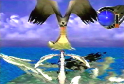
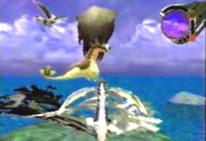
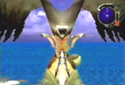
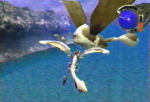

Juba's Corner: Information about Tobitamas
 |
| {Juba:} |
|  A Tobitama has long ears that also serve as wings. |
|  It also has a long tail, with a ball at its end. |
|  Notice its one large eye, that it uses to see. |
 Here is a Tobitama baby. |